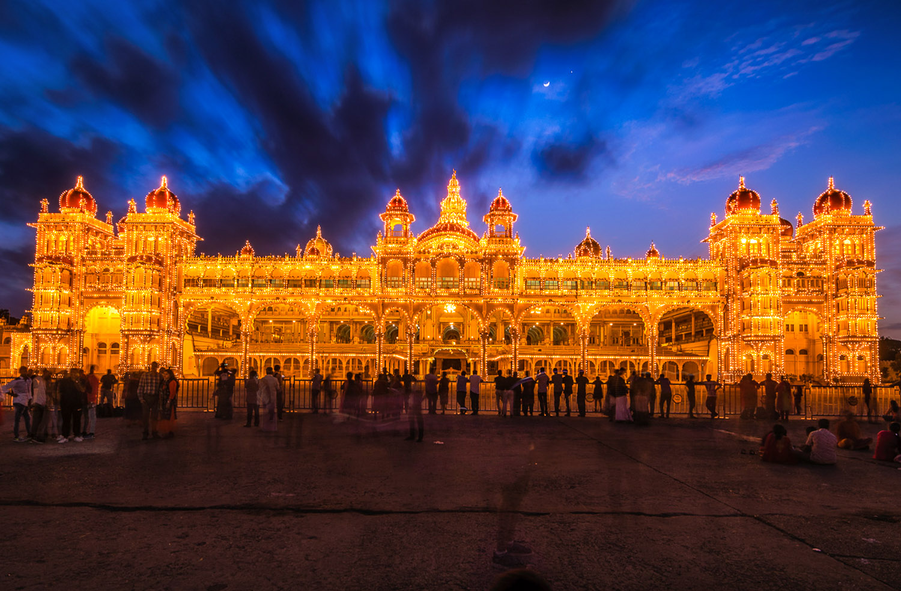
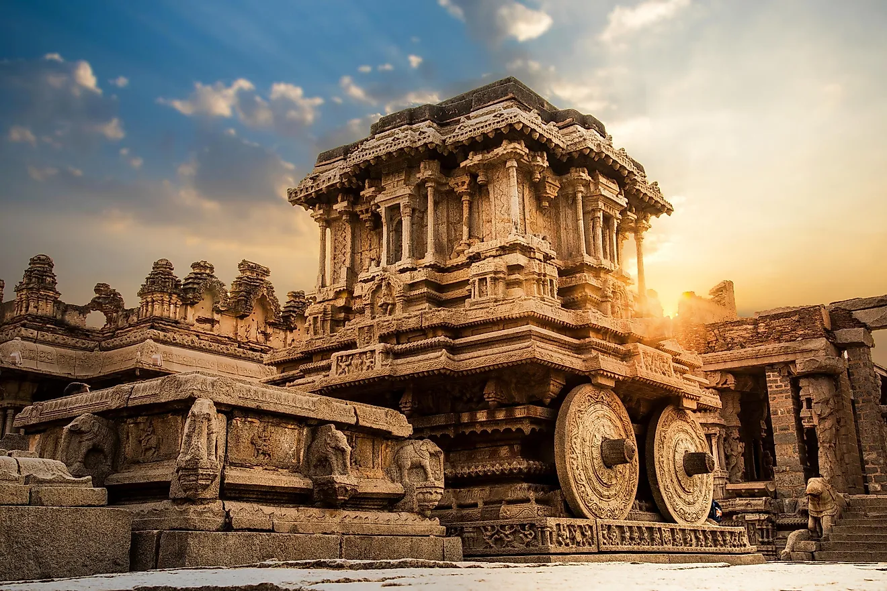
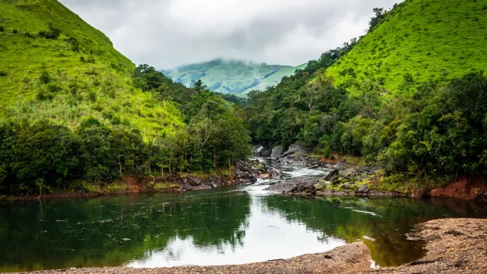
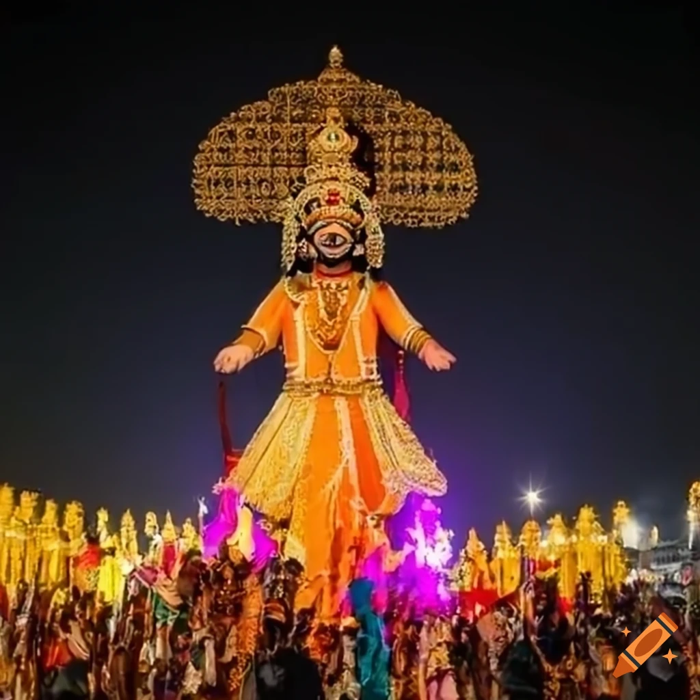

The Land of Temples, Heritage & Festivals

The Mysore Palace is one of the most famous landmarks of Karnataka. Known for its grand architecture, royal history, and evening illumination, it is a major tourist attraction in Mysore city.
The palace hosts the annual Dasara festival, attracting thousands of visitors from across India and abroad.

Hampi is a UNESCO World Heritage Site famous for its ruins of the Vijayanagara Empire. The stone temples, monuments, and landscape are breathtaking examples of historical and architectural brilliance.
Hampi attracts history enthusiasts, photographers, and travelers seeking to explore Karnataka's rich past.

Known as the Scotland of India, Coorg is a hill station famous for coffee plantations, scenic hills, waterfalls, and rich biodiversity.
Coorg also showcases Kodava culture, with traditional festivals, dance, and cuisine offering a unique experience to visitors.

Karnataka’s Dasara, especially in Mysore, is a grand 10-day celebration. It features processions, music, dance, decorated elephants, and cultural programs.
The festival is a vibrant display of tradition, art, and devotion, bringing together locals and tourists in celebration.
Karnataka is rich in Carnatic music, Yakshagana dance-drama, folk arts, classical temples, and colorful festivals. The state beautifully balances its historical heritage with modern city life.
From traditional attire like Ilkal sarees to vibrant dhol performances during festivals, Karnataka’s culture reflects diversity, creativity, and artistic excellence.